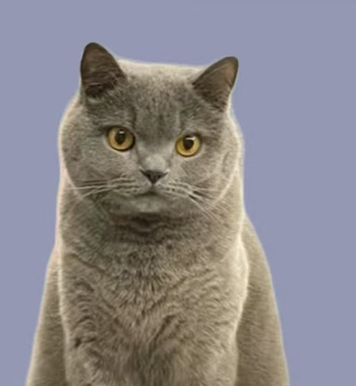
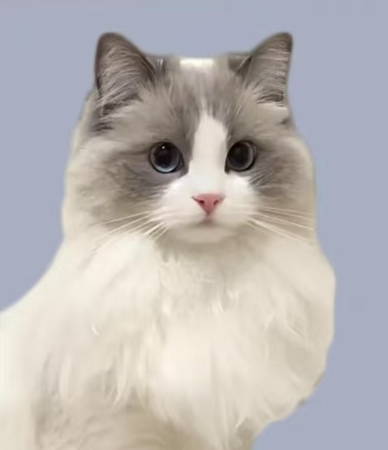
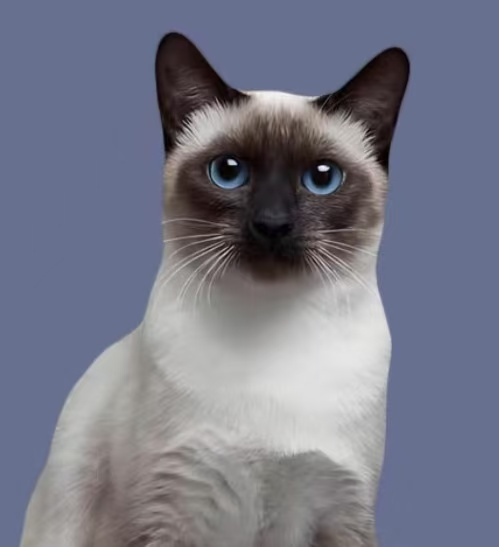

猫咪品种及特征
美短猫:不易生病，寿命相对较长，智商高，“猫中柯基”可可爱爱活泼好动，还特别粘人，缺点是太活泼，容易拆家、易患心肌遗传病。

蓝猫:性格温顺，脾气超好，安静好养。头脸圆乎乎 的非常可爱，缺点是不爱动。容易过度肥胖 易有遗传疾病

布偶猫:颜值高，性格温顺，比较粘人，缺点是肠道比 较脆弱，毛发难打理

暹罗猫:对主人忠诚，机智活泼 最开始暹罗猫是皇宫和 大寺院中饲养的贵族猫，缺点是越长越黑，怕 冷